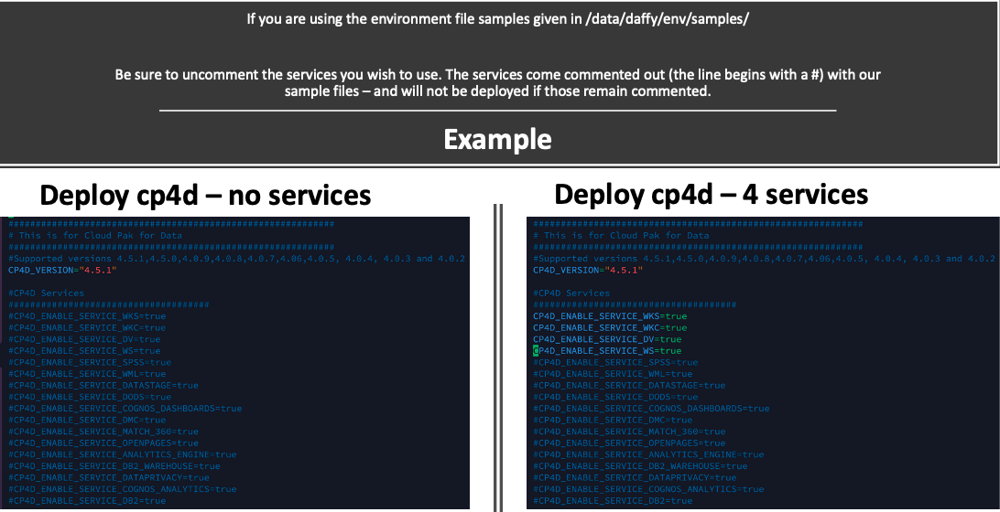

Cloud Pak for Data¶

At this point, you have a working OCP cluster on your platform of choice. Your <ENVIRONMENT_NAME>-env.sh configuration file will contain details of the platform and OCP installation. You will now add the following details to your env file:
1) The Cloud Pak info that you wish to install
2) The services that you wish to install on the Cloud Pak
Step 2: Deploy Cloud Pak¶
Deploying the Cloud Pak for Data requires one entry to your environment file (/data/daffy/env/<ENVIRONMENT_NAME>-env.sh).
CP4D_VERSION=
You can copy the following to your <ENVIRONMENT_NAME>-env.sh:
CP4D_VERSION="4.6.5"
With these values, the Daffy engine will be able to install the version of Cloud Pak for Data and prepare for the desired services.
| CP4D Supported Version | OCP Versions |
|---|---|
| 4.6.5 | 4.10, 4.12 |
| 4.6.4 | 4.10, 4.12 |
| 4.6.3 | 4.10 |
| 4.6.2 | 4.10 |
| 4.6.1 | 4.10 |
| 4.6.0 | 4.10 |
Run the following command to deploy the Cloud Pak for Data:
/data/daffy/cp4d/build.sh <ENVIRONMENT_NAME>
cpd-instance
cpd-operators
ibm-common-services
Step 3: Deploy Services¶
Set the flags in your environment file (<ENVIRONMENT_NAME>-env.sh) for the CP4D services you wish to deploy.
| Variable Name | Value's | Info | Required |
|---|---|---|---|
| CP4D_ENABLE_SERVICE_WKS | true / false | Watson Knowledge Studio | No |
| CP4D_ENABLE_SERVICE_WKC | true / false | Watson Knowledge Catalog | No |
| CP4D_ENABLE_SERVICE_DV | true / false | Data Virtualization | No |
| CP4D_ENABLE_SERVICE_WS | true / false | Watson Studio | No |
| CP4D_ENABLE_SERVICE_SPSS | true / false | Statistical Package for Social Sciences | No |
| CP4D_ENABLE_SERVICE_WML | true / false | Watson Machine Learning | No |
| CP4D_ENABLE_SERVICE_DATASTAGE | true / false | DataStage | No |
| CP4D_ENABLE_SERVICE_DODS | true / false | Decision Optimization | No |
| CP4D_ENABLE_SERVICE_DMC | true / false | DB2 Management Console | No |
| CP4D_ENABLE_SERVICE_COGNOS | true / false | Cognos | No |
| CP4D_ENABLE_SERVICE_MATCH_360 | true / false | Match 360 | No |
| CP4D_ENABLE_SERVICE_OPENPAGES | true / false | Open Pages | No |
| CP4D_ENABLE_SERVICE_ANALYTICS_ENGINE | true / false | Analytics Engine powered by Apache Spark | No |
| CP4D_ENABLE_SERVICE_DB2_WAREHOUSE | true / false | DB2 Warehouse | No |
| CP4D_ENABLE_SERVICE_DATAPRIVACY | true / false | Data Privacy | No |
| CP4D_ENABLE_SERVICE_COGNOS_ANALYTICS | true / false | Cognos Analytics | No |
| CP4D_ENABLE_SERVICE_DB2 | true / false | DB2 OLTP | No |
| CP4D_ENABLE_SERVICE_WATSON_OPENSCALE | true / false | Watson OpenScale | No |
| CP4D_ENABLE_SERVICE_WS_PIPELINES | true / false | Watson Pipelines | No |
| CP4D_ENABLE_SERVICE_FACTSHEETS | true / false | AI FactSheets | No |
| CP4D_ENABLE_SERVICE_REPLICATION | true / false | Data Replication | No |
You can copy the following to your <ENVIRONMENT_NAME>-env.sh:
CP4D_ENABLE_SERVICE_WKS="false"
CP4D_ENABLE_SERVICE_WKC="false"
CP4D_ENABLE_SERVICE_DV="false"
CP4D_ENABLE_SERVICE_SPSS="false"
CP4D_ENABLE_SERVICE_WS="false"
CP4D_ENABLE_SERVICE_WML="false"
CP4D_ENABLE_SERVICE_DATASTAGE="false"
CP4D_ENABLE_SERVICE_DODS="false"
CP4D_ENABLE_SERVICE_DMC="false"
CP4D_ENABLE_SERVICE_COGNOS_DASHBOARDS="false"
CP4D_ENABLE_SERVICE_MATCH_360="false"
CP4D_ENABLE_SERVICE_OPENPAGES="false"
CP4D_ENABLE_SERVICE_ANALYTICS_ENGINE="false"
CP4D_ENABLE_SERVICE_DB2_WAREHOUSE="false"
CP4D_ENABLE_SERVICE_DATAPRIVACY="false"
CP4D_ENABLE_SERVICE_COGNOS_ANALYTICS="false"
CP4D_ENABLE_SERVICE_DB2="false"
CP4D_ENABLE_SERVICE_WATSON_OPENSCALE="false"
CP4D_ENABLE_SERVICE_WS_PIPELINES="false"
CP4D_ENABLE_SERVICE_FACTSHEETS="false"
CP4D_ENABLE_SERVICE_REPLICATION="false"
Run the following command to deploy the Cloud Pak for Data services:
/data/daffy/cp4d/service.sh <ENVIRONMENT_NAME>
Step 3a: Status¶
The service can take a few hours to complete, based on which one you chose to deploy. To help monitor the status of the service deployment you can run the --help flag to see what flags you can use to get information on your service deployment.
Run the following commands to check the Cloud Pak for Data to see what command flags you can run:
/data/daffy/cp4d/service.sh <ENVIRONMENT_NAME> --help
/data/daffy/cp4d/service.sh <ENVIRONMENT_NAME> --AllStatus
If you want to have a running job to refresh every few seconds, you can run the above command via the watch command:
watch -c /data/daffy/cp4d/service.sh <ENVIRONMENT_NAME> --AllStatus
/data/daffy/cp4d/service.sh <ENVIRONMENT_NAME> --WKCStatus
/data/daffy/cp4d/service.sh <ENVIRONMENT_NAME> --WKSStatus
/data/daffy/cp4d/service.sh <ENVIRONMENT_NAME> --WSStatus
/data/daffy/cp4d/service.sh <ENVIRONMENT_NAME> --DVStatus
/data/daffy/cp4d/service.sh <ENVIRONMENT_NAME> --WMLStatus
/data/daffy/cp4d/service.sh <ENVIRONMENT_NAME> --SPSSStatus
/data/daffy/cp4d/service.sh <ENVIRONMENT_NAME> --DataStageStatus
/data/daffy/cp4d/service.sh <ENVIRONMENT_NAME> --DODSStatus
/data/daffy/cp4d/service.sh <ENVIRONMENT_NAME> --Match360Status
/data/daffy/cp4d/service.sh <ENVIRONMENT_NAME> --OpenPagesStatus
/data/daffy/cp4d/service.sh <ENVIRONMENT_NAME> --AnalyticsEngineStatus
/data/daffy/cp4d/service.sh <ENVIRONMENT_NAME> --DB2WarehouseStatus
/data/daffy/cp4d/service.sh <ENVIRONMENT_NAME> --DataPrivacyStatus
/data/daffy/cp4d/service.sh <ENVIRONMENT_NAME> --CognosAnalyticsStatus
/data/daffy/cp4d/service.sh <ENVIRONMENT_NAME> --DB2Status
/data/daffy/cp4d/service.sh <ENVIRONMENT_NAME> --OpenscaleStatus
/data/daffy/cp4d/service.sh <ENVIRONMENT_NAME> --WSPipelinesStatus
/data/daffy/cp4d/service.sh <ENVIRONMENT_NAME> --FactsheetStatus
/data/daffy/cp4d/service.sh <ENVIRONMENT_NAME> --ReplicationStatus
/data/daffy/cp4d/build.sh <ENVIRONMENT_NAME> --Console
